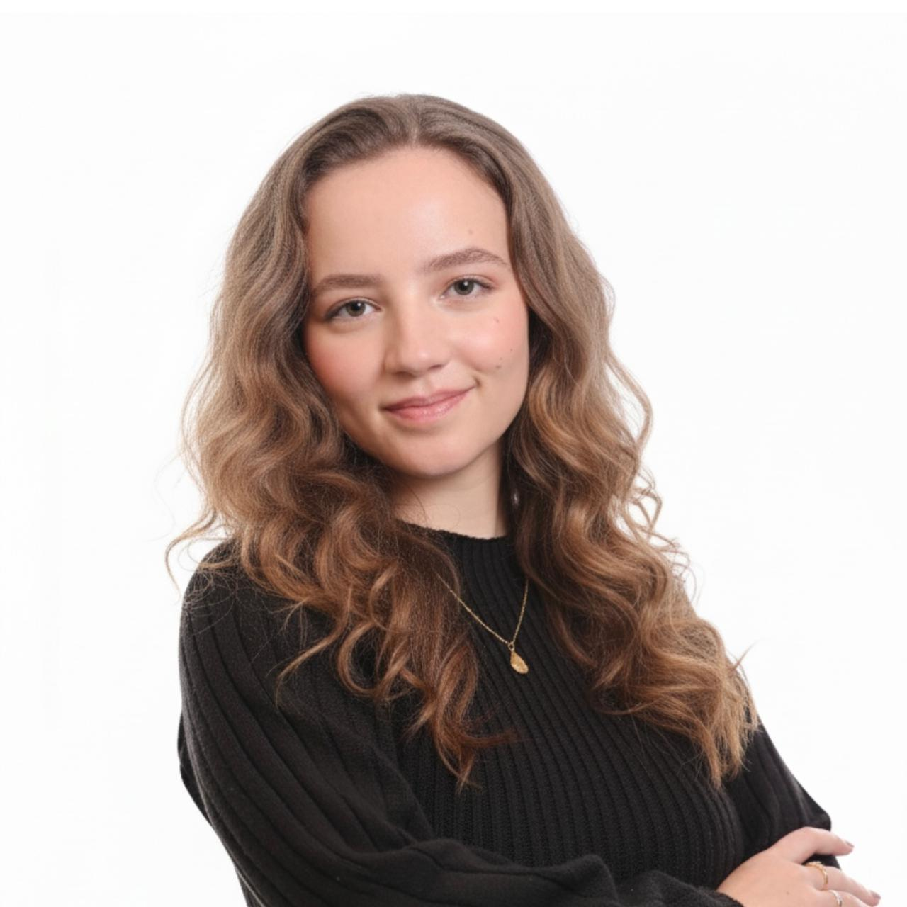

Biomédica (2022-2025) com experiência de 2 anos em Iniciação Científica na Fiocruz. Atuei na área de Regulação da Expressão Gênica, focando em Biologia Molecular e Microbiologia de Fungos.
Formação em Bioinformática — Thiago Vidotto
📧 Email: marianamirandamaia@outlook.com
🔗 LinkedIn: mariana-maia06
📸 Instagram: @nana.rms